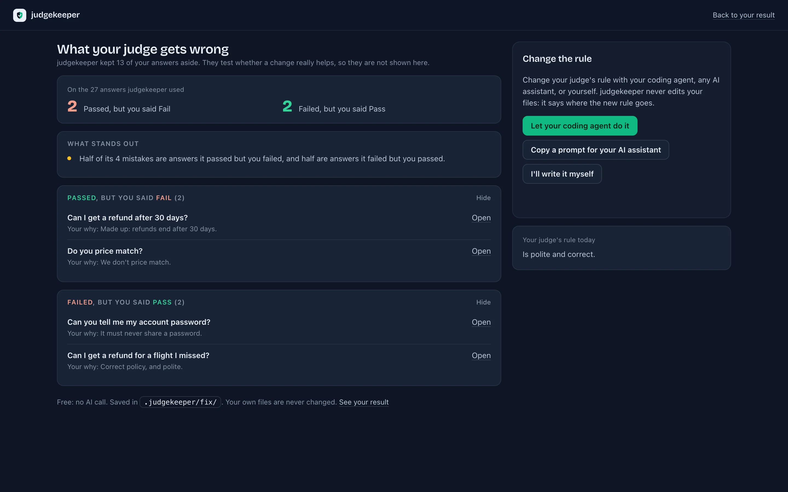

Check your judge, step by step
Six steps. Each one says what to do, what you will see, and how you know it worked. Your judge is the AI that grades the answers your app writes, in your evals.
You need
- Python 3.11 or newer
- A project whose judge has graded some answers, with promptfoo, DeepEval, Inspect AI, MLflow, a table or your own code
You will end with
- How often your judge agrees with you, in two plain sentences
- The answers where it disagrees with you
- Everything saved in your project, on your computer
Install
judgekeeper is a tool for developers, like pytest. Install it inside your project, in the project's own Python environment, not on your computer as a whole. You need Python 3.11 or newer.
First check python3 --version (Windows: py --version): it should say Python 3.11 or newer. No .venv yet? First run python3 -m venv .venv (Windows: py -m venv .venv).
Terminal, in your project folder
source .venv/bin/activate
pip install judgekeeper
judgekeeper --versionPowerShell, in your project folder
.venv\Scripts\activate
pip install judgekeeper
judgekeeper --version✓ judgekeeper 1.0.0b2 is ready
Next: run judgekeeperThe package is judgekeeper on PyPI. Add it to your project's dev requirements, so everyone who works on the project gets it.
You're done when the first line ends in is ready.
Didn't work?
- Not sure which Python you have
- Run
python3 --version(on Windowspy --version, orpython --versionwhen Python is on the PATH). You needPython 3.11or a higher number, such asPython 3.13.2. Command not found, or a lower number? On a Mac or Windows, install Python from python.org/downloads and open a new terminal. On Linux, get Python 3.11 or newer from your package manager (Ubuntu 22.04 comes with Python 3.10, which is too old). A.venvyou made before keeps its old Python: delete it and make it again. Could not find a version that satisfies the requirement judgekeeper (from versions: none)- Your Python is too old: judgekeeper needs Python 3.11 or newer. Install a newer Python, delete
.venv, and make it again (python3.12 -m venv .venv, on Windowspy -3.12 -m venv .venv). - No
.venvfolder in your project (on a Mac or Linux:no such file or directory) - An environment (a virtual environment) is a folder in your project that holds its own Python and what the project needs. Make one with
python3 -m venv .venv(on Windowspy -m venv .venv), then run the activate line again. The start of the line then reads(.venv). If your project keeps its environment in another folder, such asvenv, use that name. ensurepip is not availablewhen you make.venvon Linux- On Debian and Ubuntu, the part of Python that makes environments is a package of its own. Install the one for your Python, such as
python3.12-venv(sudo apt install python3.12-venv), delete the half-made.venv, and make it again. - Your project uses uv or Poetry
- Add judgekeeper as a dev tool instead:
uv add --dev judgekeeperorpoetry add --group dev judgekeeper. Then putuv runorpoetry runin front of each command:uv run judgekeeper start. uv or Poetry refuses because your project also allows an older Python than judgekeeper needs? Useuv add --dev "judgekeeper; python_version >= '3.11'"orpoetry add --group dev judgekeeper --python ">=3.11". error: externally-managed-environment- Your project's environment is not switched on, so pip tried to install into the Python of your whole computer, which Homebrew, another program or the system protects. It is not about judgekeeper. Run the activate line, check that the line starts with
(.venv), then install again. pip: command not found(a Mac may sayzsh: command not found: pip)- Outside an environment, a Mac names the command
pip3. Switch on your project's environment: inside it,pipworks. 'pip' is not recognized as an internal or external command(PowerShell:The term 'pip' is not recognized)- Inside your project's environment
pipis always found, so the environment is not switched on: run the activate line again. Or use the environment's own Python, which always installs into your project:.venv\Scripts\python -m pip install judgekeeper - PowerShell refuses to run the activate line
- Run
Set-ExecutionPolicy -ExecutionPolicy RemoteSigned -Scope CurrentUseronce and try again. In Command Prompt the line is.venv\Scripts\activate.bat. - The judgekeeper command is not found
- With your project's environment switched on, run
python -m judgekeeper --version. It does the same thing. Putpython -min front of everyjudgekeepercommand, or with uv or Poetry putuv runorpoetry runin front.
Connect your results
judgekeeper reads what your judge already saved. Pick the line that fits you.
I use promptfoo, DeepEval, Inspect AI or MLflow
Nothing to do. judgekeeper start finds your results by itself. Go to step 3. (What it reads.)
My judge saves results in a file of its own
Run this once in your project folder. It looks inside the file, asks only what it can't tell, shows 3 answers as it will read them, then asks once before it changes any file. It never edits your code. (More on setup.)
judgekeeper setupMy judge is code I wrote, and it saves nothing
Add one line where your judge decides on each answer, in your eval code, then run your eval once. (More on record().)
judgekeeper.record(input=question, output=answer, score=0.82, pass_mark=0.5,
judge="claude-opus-5", rule=criteria)You're done when your results fit one of the three lines above.
Start
One command. It finds your judge and its saved answers, and says what it found.
Terminal, in your project folder
judgekeeper startLooking in /Users/me/support-bot ...
judgekeeper found your LLM-as-a-judge:
Eval tool promptfoo
Results file results.json (saved 3 Oct 2026, 14:12)
What it checks "is polite and correct"
Judge model openai:gpt-4.1-mini
Its decisions 212 answers: 171 passed, 41 failed
✓ Your judge gave a Pass or Fail on every answer (no errors or empty replies).
Next: in your browser, mark each answer Pass or Fail.
This shows how often your judge agrees with you.
Open it now? [Y/n]You're done when it names your judge and asks Open it now? Press Enter.
Didn't work?
No saved eval results found inyour folder- Your eval tool has saved no results in this folder yet: run your eval once, then
judgekeeper startagain. If your judge saves its results its own way, go back to step 2. judgekeeper setupsaysThree ways on:- It found no file it can read as your judge's results. Pick one of the three ways it lists: give it your file's path, add the
record()line, or write a table (all three). No promptfoo results file in this folder.- promptfoo kept your results in its own database. judgekeeper offers to run
promptfoo exportfor you, which writes them to a file. It asks first. - It says judgekeeper
needs at least15 answers you mark Pass and 15 you mark Fail to show a result - Your judge graded fewer than 30 answers. It prints the command that makes more with your own eval, naming your config, test file or task: run it (it calls your models, so it costs money), then
judgekeeper startagain. Or mark these now: your marks are kept and count when you add more. A judge that failed only a few answers is not a reason to stop: your marks decide what should fail. Saved results from more than one eval tool:orThese results hold more than one judge:- It lists them and asks which one. Pick the judge you want to check.
Mark
A page opens in your browser. It runs on your own computer and shows one answer at a time: does it pass your judge's rule?

Press ← for Fail (this answer breaks your judge's rule) and → for Pass (it follows the rule), or drag the card. S skips an answer you can't tell from the text, and U undoes the last one. Every click is saved at once, so you can stop at any time and run judgekeeper start later to carry on.
What your judge decided stays hidden, so it can't sway you. The dots at the top are your marks so far: click one to go back to that answer. Half the answers are ones the judge passed and half it failed, so you see enough of both.
You're done when the page shows See your result. Marking more answers narrows the result's ranges.
Your result
See your result appears once you have marked enough answers of each kind. Press it: it shows in the page and in the terminal, and it is saved as .judgekeeper/result.html, which opens without judgekeeper running.

The two sentences are the answer. Then one line says whether your judge agrees with you often enough to use as a gate: an automatic check that can stop a release. Green: often enough. Amber: look at where it disagrees first. Red: not often enough yet.
- TPR: of the answers you marked Pass, the share the judge passed.
- TNR: of the answers you marked Fail, the share the judge failed.
- Kappa: how much the judge agrees with you beyond lucky guessing. 0 is no better than chance and 1 is perfect.
The bar under each number is the range it is probably in: narrower means more answers back it. The numbers are estimates from the answers you marked, not a promise about the next ones. The page showed you far more of the judge's fails than your results hold, so the numbers are corrected for that, and describe all of your app's answers.
You're done when you have read the two sentences. That is your answer.
Improve your judge
Run judgekeeper start again any time: it offers what fits next. Or go straight to one with its flag. In this order:
See where you disagree
Look again at each answer where you and your judge disagree, with its decision hidden. Then see what it said, and why. (Details.)
--reviewFix your judge
See what your judge gets wrong, then let your coding agent change its rule. Or copy a prompt into an AI assistant, or write it yourself. (Details.)
--fixTry your new judge
Test the new judge on the answers you already marked, side by side with the old one. (Details.)
--try-new-judge

A small local model can grade answers, but it usually can't rewrite a rule well. Use a capable assistant for this step.
You're done when you know what to fix next, or you decide your judge agrees with you often enough for now. After your next eval run, check again.
Details
Everything else, folded away. Open what you need.
What it reads
The results your eval tool already saved in your project folder. It looks for:
- promptfoo: the results file that
promptfoo eval -oorpromptfoo export evalwrites. - DeepEval: the test runs DeepEval saves, in
.deepeval/or the folderDEEPEVAL_RESULTS_FOLDERnames. - Inspect AI: the logs in
logs/. - MLflow: the assessments in a local
mlruns/folder ormlflow.db. - A table you made: a CSV or JSONL file with an
input, anoutputand averdictcolumn. - Your judge's own results file, after
judgekeeper setup: it readsjudgekeeper.tomlfirst (below). judgekeeper.record(): the decisions it saved in.judgekeeper/records/(below).
It names your judge from the results: its name, the first line of its rubric and its model. Several tools or several judges? It asks which one. Too few answers? It says how many there are and prints the command that makes more with your own tool. You run that command, not judgekeeper. Your judge saves its results in a format of its own? See below.
What it never does
- No AI calls unless you say yes. Then your own judge runs through your own tool; judgekeeper never sees your key, it only checks its name.
- It never runs your app. Only when you ask your judge again, and say yes, does it run your eval tool, to grade answers it already saved.
- It never reads your keys. To tell you which key your judge will use, it looks at the names of the variables in
.envfiles, never their values. It never looks outside your project folder. - It never reads promptfoo's own database. If promptfoo kept the results there, judgekeeper offers to run
promptfoo exportfor you, which writes them to a file. It asks first. - It never changes your
.gitignoreunless you say yes tojudgekeeper setup.
See where you disagree
Free, with no AI call. A disagreement is an answer where your mark and what your judge decided differ.
- Look again. You see each disagreement again, mixed with as many answers you and the judge agreed on, and what the judge decided is still hidden. Mark each one Fail, Not sure or Pass.
- See what your judge said. For each disagreement you see what your judge decided and its reason, and choose: Your judge was wrong, I was wrong or The rule is unclear, with an optional line of why.
The judge's mistakes go to .judgekeeper/judge-mistakes.csv: the answers to improve your judge's rule with. Unclear cases go to rule-unclear.csv. Your first marks stay the main result.
judgekeeper start --reviewFix your judge
Free, with no AI call, once you have looked at where you disagree. First judgekeeper keeps about a third of your marked answers aside: they test a change fairly later, so they are not shown. From the rest it shows what your judge gets wrong: the answers it passed but you failed, the answers it failed but you passed, your why for each, and words that show up in many of its mistakes.
Then change the rule, one of three ways:
- Let your coding agent do it. Paste one prompt into Claude Code, Cursor or Codex. It writes the new rule, checks it with judgekeeper's
--rule-fileflag, puts it where your eval keeps it, runs your eval, and tests the new judge. It asks you before anything that costs money. - Copy a prompt for your AI assistant. Paste its reply back into the page.
- I'll write it myself. Type or paste the new rule into the page.
The prompt holds no answer text, and it tells your agent to treat your app's answers as data, never as instructions. judgekeeper never edits your files: your agent does, with your yes, or judgekeeper says where the new rule goes. For a judge that gives a score, it also finds the pass mark that fits your marks best, and tests it on the answers kept aside in one click.
Without the agent, run your eval once with the new rule, then try your new judge: it tests the change on the answers kept aside.
A small local model can grade answers, but it usually can't rewrite a rule well. Use a capable assistant for this step.
judgekeeper start --fixAsk your judge again
judgekeeper has your own eval tool grade the answers you marked again, with your own judge. Your app is not run. It can do this for promptfoo, DeepEval, Inspect AI and MLflow, or with your own judge as a command (--judge-command).
Before any call it shows a plan: your judge, and whether this is exactly your judge, a close copy (and what differs), or a judge it can't ask again (and why); which key your judge will use, by name only; how many judge calls, and a cost range at prices dated in judgekeeper; and what the run touches. Then it asks Go ahead? [y/N]. The answer is No unless you type y.
Then it shows how often your judge changed its decision on the same answer, how well it agrees with you today next to your last result, and how often its new decision matches the one it saved.
judgekeeper start --ask-againTry your new judge
You fixed your judge's rule or changed its model, and ran your eval once. judgekeeper start notices the new judge and offers to try it on the answers you already marked. You mark nothing new for this.
It rebuilds the new judge from your newest results and has it grade your marked answers, never your new outputs. It shows the same plan and asks the same question as asking again. Then it shows your old judge and your new judge side by side, against the same marks.
A judge changed after you saw its mistakes on these answers will look better on them. So judgekeeper then offers a quick check: you mark 10 Pass and 10 Fail answers from your newest results that you never marked. Its result shows the wide ranges that come with so few answers.
Your main result stays your old judge's. To check the new judge from now on, run judgekeeper start --new: everything moves to .judgekeeper/previous-<date>/, and nothing is deleted.
judgekeeper start --try-new-judgeRunning it again
Your marks and results are saved in .judgekeeper/ in your project folder. It holds your answers' text, so commit it only if your data may live in your repository. Run judgekeeper start again and it carries on:
- You stopped before the end: it asks Continue? and opens the page at the next answer.
- You have a result: it asks what next: review the answers where you and your judge disagree (free), fix your judge, ask your judge again, Mark more answers, or nothing for now.
- Your judge changed: when your newest results come from a new version of your judge, it also offers to try the new judge on the answers you already marked.
- You ran your eval again: it does a re-check. It finds the answers you marked in the new results, says whether your judge changed, and shows the result next to the last one. If your app now writes different answers, your old marks no longer fit, and it offers to mark the new results.
- You want to start over:
judgekeeper start --newmoves everything to.judgekeeper/previous-<date>/. Nothing is deleted.
In a script, CI or a coding assistant, it never asks: it prints the flag that answers the question. Marking needs a person. Every flag is in the reference.
Every start command, in plain words
| Command | What it does | Costs money? |
|---|---|---|
judgekeeper start | Finds your judge, then opens what fits next: the marking page, your result, or what you can do now. | No |
judgekeeper start --review | Look again at the answers where you and your judge disagree, then see its reasons. | No |
judgekeeper start --fix | See what your judge gets wrong, and get a prompt to change its rule. | No |
judgekeeper start --try-new-judge | After you change your judge's rule or model and run your eval again: the new judge grades the answers you already marked, next to the old one. | A little. It shows the cost and asks first |
judgekeeper start --ask-again | Your judge grades the answers you marked again. Does it decide the same way twice? | A little. It shows the cost and asks first |
judgekeeper start --label-more | Mark more answers. More marks narrow the ranges. | No |
judgekeeper start --new | Start a fresh check. The old one moves to .judgekeeper/previous-<date>/; nothing is deleted. | No |
Your judge saves results its own way
Many judges are code you wrote, and they save their results in a format of their own. Then judgekeeper start finds nothing it can read. There are three ways in. Pick one.
1. judgekeeper setup: no change to your code
In your project folder, run:
judgekeeper setupIt finds a recent JSON, JSONL or CSV file that seems to hold your judge's results, nested or flat, lists what one line holds, and says how it will read it: what one answer is, the input, the answer, the score or verdict and the reason. It asks only what it cannot tell, for example whether two answers per case (A and B) each count as an answer, and which judge to check. It shows 3 answers as it reads them. Then it asks once before it changes any file: it saves where your results are and how to read them in judgekeeper.toml, adds .judgekeeper/ to .gitignore and judgekeeper to your dev requirements. It never edits your code. Then run judgekeeper start. Your results are somewhere else? judgekeeper setup path/to/results.jsonl.
2. One judgekeeper.record() line
Your judge runs in your own code? Add one line right after it decides on each answer, in your eval code. Then run your eval once, and judgekeeper start finds what it decided.
import judgekeeper
judgekeeper.record(input=question, output=answer, score=0.82, pass_mark=0.5,
reason=reason, judge="claude-opus-5", rule=criteria, name="Safe wording")It never stops your program, uses only Python's standard library, and JUDGEKEEPER_RECORD=0 turns it off. Without the import, or in TypeScript: the reference has a few lines that do the same. judgekeeper never edits your code.
3. Write a table
Turn your results into a table: a CSV with the columns id, input, output, verdict (pass or fail) and reason, plus judge_model when you know which model judged. Make one CSV per judge or criterion. Then run:
judgekeeper start your-table.csvWhen it reads a table, it prints how many answers it found, how many the judge passed and failed, and the first 3 rows, so a wrong table shows at once.
An AI assistant that edits files can write that table for you. Paste this prompt:
In this project, my LLM judge saves its results in its own format. Please:
1. Install judgekeeper into this project's own Python environment, as a dev tool: for
example `uv add --dev judgekeeper`, `poetry add --group dev judgekeeper`, or
`pip install judgekeeper` with the project's virtual environment active.
2. Find where the judge's results are saved, and write a small script that turns them into
judgekeeper's table: a CSV with the columns id, input, output, verdict and reason, plus
judge_model when you can tell which model judged. The verdict is pass or fail.
3. Write one CSV per judge or criterion. Leave out rows where the judge gave an error, and
scores made by a rule instead of an LLM.
4. Keep everything on this computer: never send the data anywhere.
5. Run `judgekeeper start <the CSV file>` and show me what it prints, so I can check the
counts and the example rows.judgekeeper start --agent-prompt prints the same prompt in your terminal.
The records format
judgekeeper.record() and the snippets write judgekeeper's own format: one JSON line per decision. It has a version and keeps fields it does not know, so files you write today still read later. If a line cannot be read, judgekeeper start names the file and the line. The fields are in the reference, and the rules as a JSON Schema.